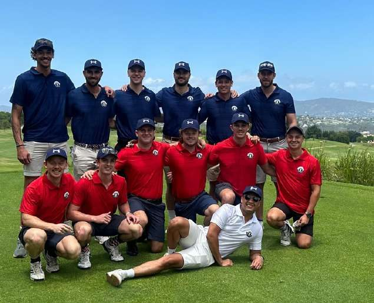
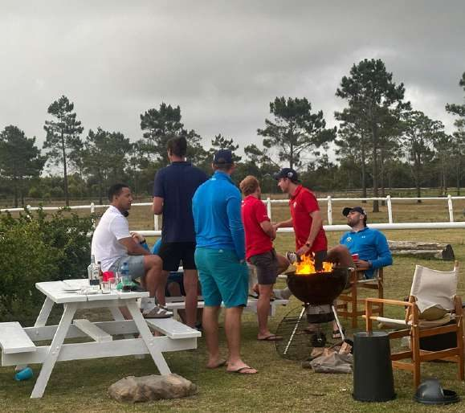
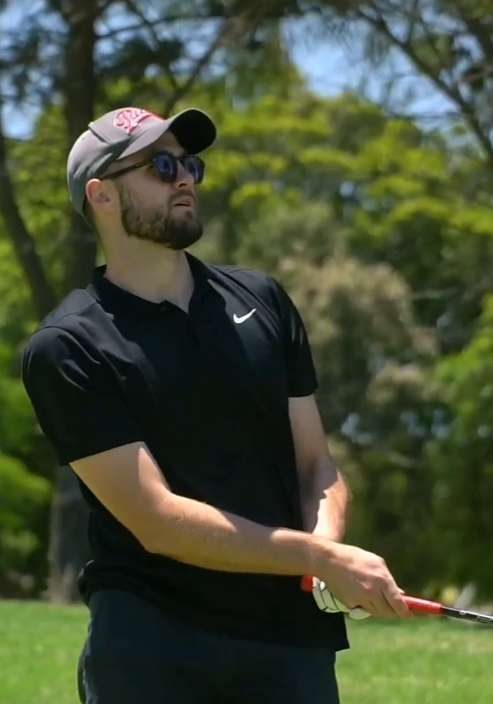

Our story
Hacking it round since 2020
Back in 2020, when most plans were being cancelled and the world had slowed to a crawl, we did the opposite. A few of us packed up our clubs, filled the cooler box and made our way to the Garden Route. That first weekend in Plettenberg Bay was spontaneous and a little chaotic, but it had everything we needed: golf, familiar faces and a break from the norm.
There was no real structure and no big vision. Just three days of hacking it around the course, lighting a small braai, and realising we were onto something worth repeating. The following years brought more players, better preparation and a clearer sense of tradition. The format sharpened, the fields grew and the legend of the tour took shape.
Today Par 2 Bar is a community of young South Africans who share a love of golf, travel and each other’s company. We play to win, but we also play for the laughs, the late nights around the fire, and the early tee times that follow them.
“You don’t lose balls, you donate them to nature.”


